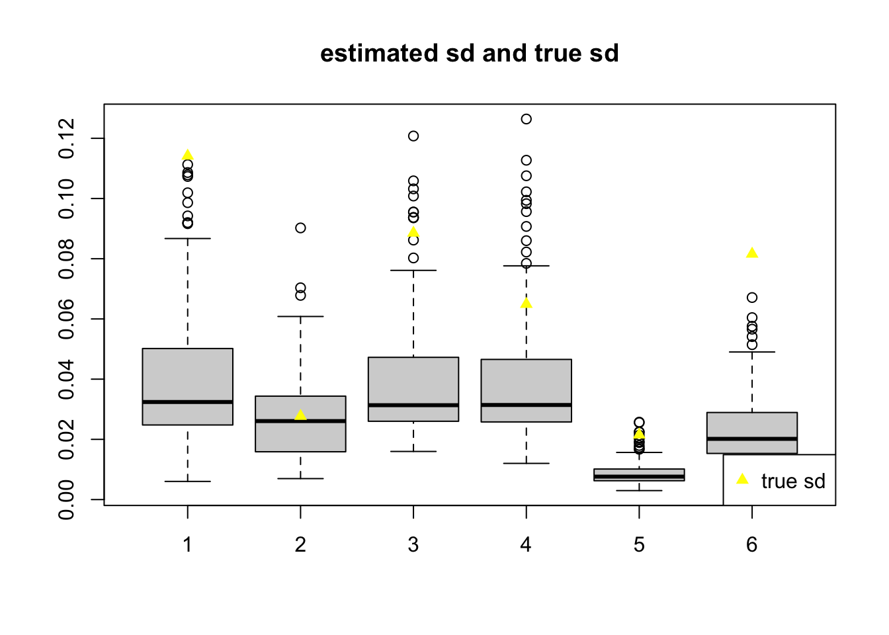
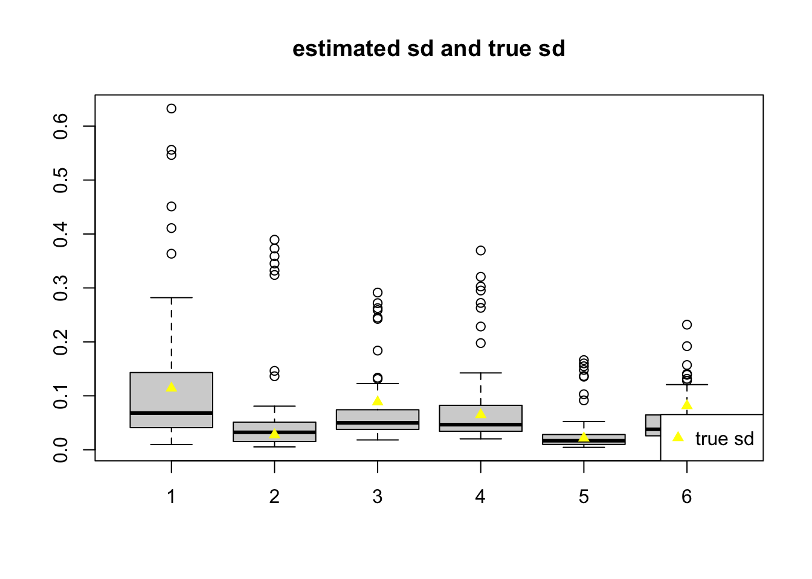
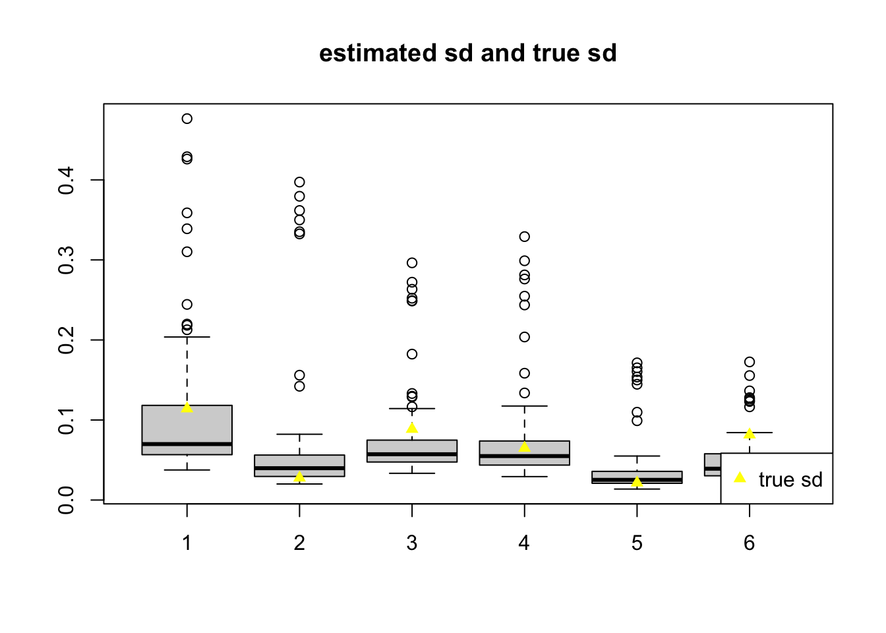
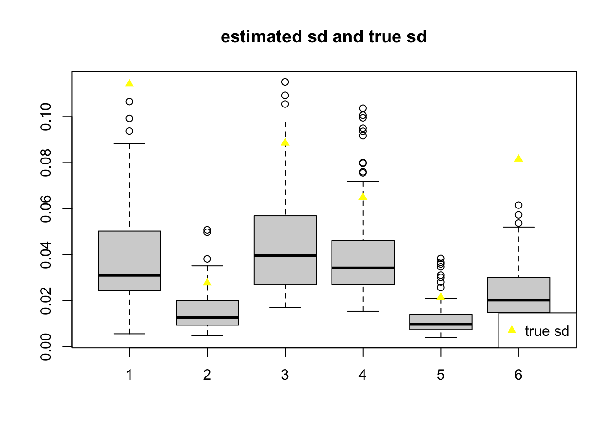
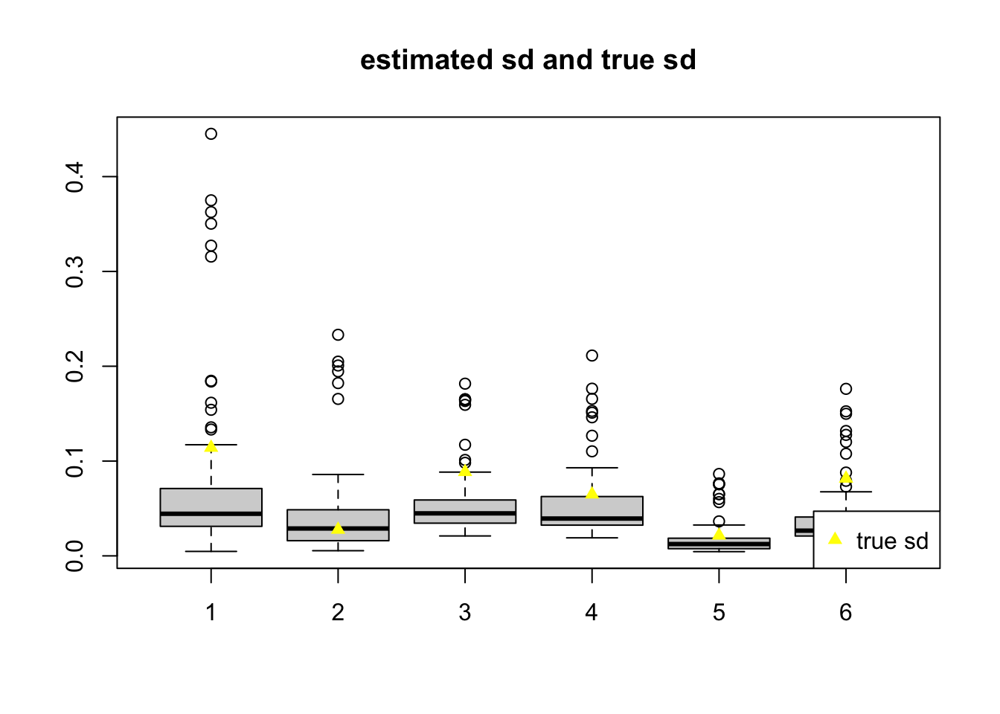
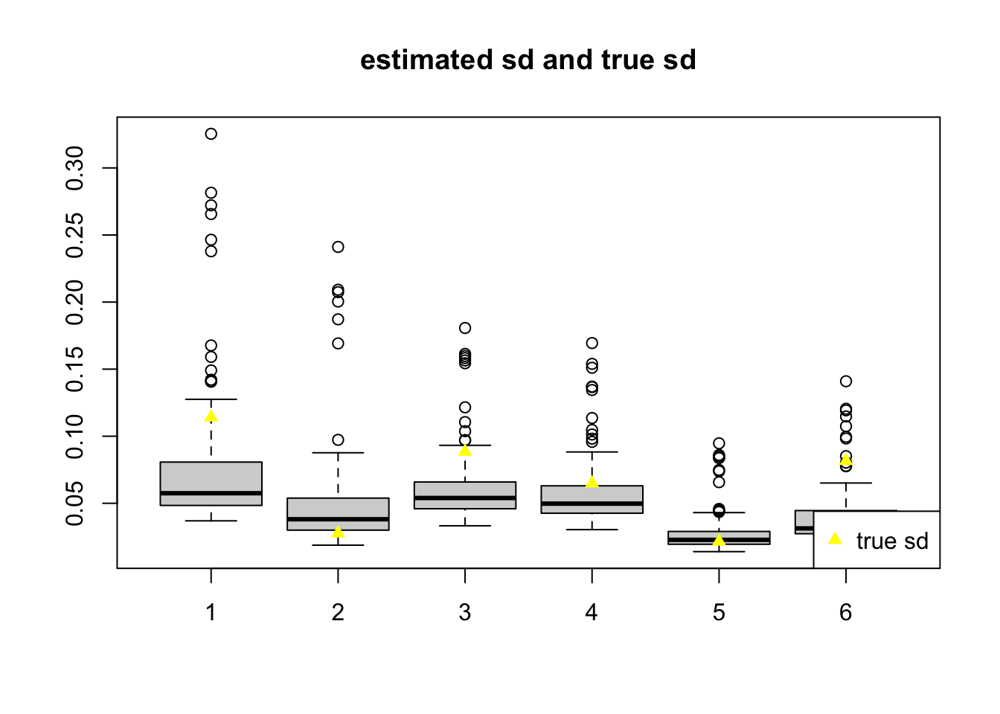

check coverage after adding weights, neuron real data, add gamma, cv, reduce fdr
DongyueXie
2021-08-18
Last updated: 2021-09-23
Checks: 7 0
Knit directory: deconference/
This reproducible R Markdown analysis was created with workflowr (version 1.6.2). The Checks tab describes the reproducibility checks that were applied when the results were created. The Past versions tab lists the development history.
Great! Since the R Markdown file has been committed to the Git repository, you know the exact version of the code that produced these results.
Great job! The global environment was empty. Objects defined in the global environment can affect the analysis in your R Markdown file in unknown ways. For reproduciblity it’s best to always run the code in an empty environment.
The command set.seed(20200403) was run prior to running the code in the R Markdown file. Setting a seed ensures that any results that rely on randomness, e.g. subsampling or permutations, are reproducible.
Great job! Recording the operating system, R version, and package versions is critical for reproducibility.
Nice! There were no cached chunks for this analysis, so you can be confident that you successfully produced the results during this run.
Great job! Using relative paths to the files within your workflowr project makes it easier to run your code on other machines.
Great! You are using Git for version control. Tracking code development and connecting the code version to the results is critical for reproducibility.
The results in this page were generated with repository version 39b982e. See the Past versions tab to see a history of the changes made to the R Markdown and HTML files.
Note that you need to be careful to ensure that all relevant files for the analysis have been committed to Git prior to generating the results (you can use wflow_publish or wflow_git_commit). workflowr only checks the R Markdown file, but you know if there are other scripts or data files that it depends on. Below is the status of the Git repository when the results were generated:
Ignored files:
Ignored: .DS_Store
Ignored: .Rhistory
Ignored: .Rproj.user/
Ignored: data/.DS_Store
Ignored: output/.DS_Store
Untracked files:
Untracked: analysis/simu_X_from_real.Rmd
Untracked: analysis/simu_check_data_generation.Rmd
Untracked: analysis/simu_correlation_centering.Rmd
Untracked: data/MuSiC/
Untracked: data/V.rds
Untracked: data/X.rds
Untracked: data/gtex/
Untracked: data/neuron/
Untracked: data/pancreas/
Untracked: output/check_coverage_weight_neuron/
Untracked: output/check_coverage_weight_xin/
Untracked: output/geneCorMat_gtexpancreas.rds
Untracked: output/geneCor_gtexpancreas_logtpm.rds
Untracked: output/geneCor_gtexpancreas_tpm.rds
Untracked: output/geneCor_gtexpancreas_tpm.rds.zip
Untracked: output/manuscript/
Untracked: output/neuron/
Untracked: output/simu_corr_xin_G1000_corband10.rds
Untracked: output/simu_corr_xin_G1000_corband100.rds
Untracked: output/simu_corr_xin_G1000_corband5.rds
Untracked: output/simu_corr_xin_G1000_corband50.rds
Untracked: output/simu_corr_xin_G1000_corpair100.rds
Untracked: output/simu_corr_xin_G1000_corpair1000.rds
Untracked: output/simu_corr_xin_G1000_corpair10000.rds
Untracked: output/simu_corr_xin_G1000_corpair1e5.rds
Untracked: output/simu_corr_xin_G1000_corpair5000.rds
Untracked: output/simu_correlation_checkassumption_betahat.rds
Untracked: output/simu_correlation_checkassumption_truebeta.rds
Untracked: output/simu_correlation_checkavariance_betahat_d500_xin_hc3.rds
Untracked: output/simu_correlation_checkavariance_betahat_d500_xin_hc3_only_pos_ecov.rds
Untracked: output/simu_correlation_checkavariance_betahat_d500_xin_jack.rds
Untracked: output/simu_correlation_checkavariance_betahat_d500_xin_trueb.rds
Untracked: output/simu_correlation_checkavariance_betahat_d50_xin_est_cor_100bulkforcor_alpha01.rds
Untracked: output/simu_correlation_checkavariance_betahat_d50_xin_est_cor_100bulkforcor_alpha05.rds
Untracked: output/simu_correlation_checkavariance_betahat_d50_xin_est_cor_100bulkforcor_alpha05_addjack.rds
Untracked: output/simu_correlation_checkavariance_betahat_d50_xin_est_cor_100bulkforcor_thresh.rds
Untracked: output/simu_correlation_checkavariance_betahat_d50_xin_est_cor_100indi.rds
Untracked: output/simu_correlation_checkavariance_betahat_d50_xin_est_cor_10indi.rds
Untracked: output/simu_correlation_checkavariance_betahat_d50_xin_est_cor_10indi_alpha03.rds
Untracked: output/simu_twosample_baron_nb10.rds
Untracked: output/simu_twosample_seger_nb10.rds
Untracked: output/simu_twosample_xin_nb10.rds
Untracked: output/simu_twosample_xin_nb50.rds
Unstaged changes:
Modified: analysis/MuSiC.Rmd
Modified: analysis/geneCor_gtexpancreas.Rmd
Modified: analysis/gene_weights.Rmd
Modified: analysis/gene_weights_addmusic.Rmd
Modified: analysis/multiref_random_nondiag.Rmd
Modified: analysis/neuron_simu_MLN.Rmd
Modified: analysis/simu_correlation_checkvariance.Rmd
Modified: analysis/xin_16_indi.Rmd
Modified: code/deconference_estfunc.R
Note that any generated files, e.g. HTML, png, CSS, etc., are not included in this status report because it is ok for generated content to have uncommitted changes.
These are the previous versions of the repository in which changes were made to the R Markdown (analysis/check_coverage_adding_weights_neuron_real2.Rmd) and HTML (docs/check_coverage_adding_weights_neuron_real2.html) files. If you’ve configured a remote Git repository (see ?wflow_git_remote), click on the hyperlinks in the table below to view the files as they were in that past version.
| File | Version | Author | Date | Message |
|---|---|---|---|---|
| Rmd | 39b982e | Dongyue Xie | 2021-09-23 | wflow_publish(“analysis/check_coverage_adding_weights_neuron_real2.Rmd”) |
| html | 7bf982d | Dongyue Xie | 2021-09-15 | Build site. |
| Rmd | c78951b | Dongyue Xie | 2021-09-15 | wflow_publish(“analysis/check_coverage_adding_weights_neuron_real2.Rmd”) |
| html | f6d44e1 | Dongyue Xie | 2021-09-09 | Build site. |
| Rmd | bd89638 | Dongyue Xie | 2021-09-09 | wflow_publish(“analysis/check_coverage_adding_weights_neuron_real2.Rmd”) |
| html | c217c20 | Dongyue Xie | 2021-09-01 | Build site. |
| Rmd | 8ebe6c0 | Dongyue Xie | 2021-09-01 | wflow_publish(“analysis/check_coverage_adding_weights_neuron_real2.Rmd”) |
| html | 3f43312 | DongyueXie | 2021-08-26 | Build site. |
| Rmd | dbe8d19 | DongyueXie | 2021-08-26 | wflow_publish(“analysis/check_coverage_adding_weights_neuron_real2.Rmd”) |
Introduction
In the neuron real data based simulation, the coverage gets larger when using true \(\beta\) for calculating variance.
Here we try to: revise the cross-validation methods, reduce the fdr level to 0.01.
indis_ref = readRDS('data/neuron/indis_ref_12400by6by97.rds')
rmse = function(x,y){sqrt(mean((x-y)^2))}source('code/deconference_main.R')
source('code/simulation/simu_correlation_ult.R')revise the cross-validation methods
b1 = c(0.1,0.1,0.15,0.15,0.2,0.3)
b2 = c(0.1,0.15,0.25,0.3,0.1,0.1)
b2=b1
n = dim(indis_ref)[3]
n_ref = 11
n_bulk = n-n_ref
b = cbind(b1%*%t(rep(1,n_bulk/2)),b2%*%t(rep(1,n_bulk/2)))
set.seed(12345)
ref.idx = sort(sample(1:n,n_ref))
G = dim(indis_ref)[1]
K = dim(indis_ref)[2]
gene_names = dimnames(indis_ref)[[1]]
X_array_ref = indis_ref[,,ref.idx]
X_array_bulk = indis_ref[,,-ref.idx]
X = apply(X_array_ref,c(1,2),mean,na.rm=TRUE)
V = t(apply(X_array_ref,c(1),function(z){(cov(t(z),use = 'complete.obs'))}))/n_ref
V.temp = t(apply(X_array_ref,c(1),function(z){(cov(t(z),use = 'complete.obs'))}))
fit.vash = vashr::vash(sqrt(rowSums(V.temp)),df=n_ref-1)
w = 1/(fit.vash$sd.post)^2
summary(w) Min. 1st Qu. Median Mean 3rd Qu. Max.
0.0000 0.1844 0.9307 2.9721 3.5059 32.5023 bulk_lib_size = 500
mb = lapply(1:n_bulk,function(i){X_array_bulk[,,i]%*%b[,i]})
mb = do.call(cbind,mb)
thetab = apply(mb,2,function(z){z/sum(z)})
true.beta = t(t(b)*c(apply(mb,2,function(z){bulk_lib_size*G/sum(z)})))
y = matrix(rpois(G*n_bulk,bulk_lib_size*G*thetab),nrow=G)
rownames(y) = gene_names
cor.idx = readRDS('data/neuron/gene12400_cor_idx_alpha005.rds')
dim(cor.idx)[1] 25653118 2R01 = sparseMatrix(i = cor.idx[,1],j = cor.idx[,2],dims = c(G,G))
diag(R01) = 1summary_temp = function(fit,b,true.beta){
boxplot(t(fit$p_hat_se),ylim = range(c(fit$p_hat_se,apply(fit$p_hat,1,sd,na.rm=T)),na.rm = T),
main = 'estimated sd and true sd')
lines(apply(fit$p_hat,1,sd),type='p',col='yellow',pch=17)
legend('bottomright',c('true sd'),pch=17,col='yellow')
waldi = (fit$p_hat-b)/fit$p_hat_se
cat('coverage p:')
print(round(rowMeans(abs(waldi)<=1.96,na.rm = T),3))
folds = fit$folds
print(table(folds))
wald_beta = (fit$beta_hat-true.beta)/fit$beta_hat_se
cat('coverage beta:')
print(round(rowMeans(abs(wald_beta)<=1.96,na.rm = T),3))
}perform standard hc3 method.
# fit = estimation_func2(y=y,X=X,Vg=V,
# w=w,hc.type='hc3',correction=FALSE,
# calc_cov=F,verbose=T,
# cor.idx=cor.idx,
# centeringXY=F,
# true.beta = NULL,
# only.scale.pos.res=F,
# only.add.pos.res=F,
# folds=NULL,
# use_all_pair_for_cov=F)
# fit$folds = NULL
# saveRDS(fit,file='output/check_coverage_weight_neuron/11ref_hc3_alpha005.rds')
fit = readRDS('output/check_coverage_weight_neuron/11ref_hc3_alpha005.rds')
summary_temp(fit,b,true.beta)
coverage p:[1] 0.372 0.407 0.395 0.674 0.512 0.442
< table of extent 0 >
coverage beta:[1] 0.360 0.442 0.395 0.651 0.547 0.453perform kmeans on row-centered bulk matrix.
# set.seed(12345)
# folds = kmeans(t(scale(t(y),scale = F)),10,iter.max = 100,algorithm="MacQueen",nstart = 20)$cluster
# fit = estimation_func2(y=y,X=X,Vg=V,
# w=w,hc.type='jackknife',correction=FALSE,
# calc_cov=F,verbose=T,
# cor.idx=cor.idx,
# centeringXY=F,
# true.beta = NULL,
# only.scale.pos.res=F,
# only.add.pos.res=F,
# folds=folds,
# use_all_pair_for_cov=F)
# fit$folds = folds
# saveRDS(fit,file='output/check_coverage_weight_neuron/11ref_jackknife_kmeans_centered_alpha005.rds')
fit = readRDS('output/check_coverage_weight_neuron/11ref_jackknife_kmeans_centered_alpha005.rds')
summary_temp(fit,b=b,true.beta = true.beta)
| Version | Author | Date |
|---|---|---|
| c217c20 | Dongyue Xie | 2021-09-01 |
coverage p:[1] 0.744 0.895 0.581 0.859 0.826 0.779
folds
1 2 3 4 5 6 7 8 9 10
38 12 8 109 28 12035 3 6 84 77
coverage beta:[1] 0.744 0.930 0.605 0.847 0.779 0.733table(folds)
round(quantile(abs(R[names(folds[folds==1]),names(folds[folds==1])]),probs = seq(0,1,by=0.1)),3)
round(quantile(abs(R[names(folds[folds==2]),names(folds[folds==2])]),probs = seq(0,1,by=0.1)),3)
round(quantile(abs(R[names(folds[folds==1]),names(folds[folds==2])]),probs = seq(0,1,by=0.1)),3)perform kmeans on row-centered and scaled bulk matrix.
# set.seed(12345)
# folds = kmeans(t(scale(t(y))),10,iter.max = 100,algorithm="MacQueen",nstart = 20)$cluster
# fit = estimation_func2(y=y,X=X,Vg=V,
# w=w,hc.type='jackknife',correction=FALSE,
# calc_cov=F,verbose=T,
# cor.idx=cor.idx,
# centeringXY=F,
# true.beta = NULL,
# only.scale.pos.res=F,
# only.add.pos.res=F,
# folds=folds,
# use_all_pair_for_cov=F)
#
# saveRDS(fit,file='output/check_coverage_weight_neuron/11ref_jackknife_kmeans_centered_scaled_alpha005.rds')
# fit$folds = folds
fit = readRDS('output/check_coverage_weight_neuron/11ref_jackknife_kmeans_centered_scaled_alpha005.rds')
summary_temp(fit,b,true.beta)
| Version | Author | Date |
|---|---|---|
| c217c20 | Dongyue Xie | 2021-09-01 |
coverage p:[1] 0.407 0.419 0.419 0.674 0.605 0.453
folds
1 2 3 4 5 6 7 8 9 10
1092 1187 1276 1444 1317 627 836 1679 1968 974
coverage beta:[1] 0.395 0.442 0.419 0.663 0.593 0.477alternatively, try to use hierarchical clustering based on correlations.
Firstly, we create a distance matrix based on the correlation index from multiple testing.
# construct distance matrix,
# if correlated, distance = 0, otherwise, correlation = 1
R01 = sparseMatrix(i = cor.idx[,1],j = cor.idx[,2],dims = c(G,G))
diag(R01) = 1
R01.dist = as.dist(1-R01)
hc = hclust(R01.dist,method = 'centroid')
folds = cutree(hc,k=10)
table(folds)This does not work because almost all genes are in 1 cluster.
Or, we directly use the correlation matrix.
day30bulk = readRDS("data/neuron/day30bulk.rds")
gene_name_12400 = readRDS('data/neuron/gene_name_12400.rds')
bulk = day30bulk[match(gene_name_12400,rownames(day30bulk)),]
bulk_cpm = apply(bulk,2,function(z){z/sum(z)*1e6})
library(Rfast)
R = cora(t(bulk_cpm))
R.dist = as.dist(1-abs(R))
hc = hclust(R.dist,method = 'centroid')
folds = cutree(hc,k=10)
table(folds)Still does not work.
Alternatively, we can run k medoids methods on the distance matrix from correlations.
library(cluster)
clusters = pam(R.dist,10,pamonce=5)
folds = clusters$clustering
table(folds)# fit = estimation_func2(y=y,X=X,Vg=V,
# w=w,hc.type='jackknife',correction=FALSE,
# calc_cov=F,verbose=T,
# cor.idx=cor.idx,
# centeringXY=F,
# true.beta = NULL,
# only.scale.pos.res=F,
# only.add.pos.res=F,
# folds=folds,
# use_all_pair_for_cov=F)
# fit$folds = folds
#
# saveRDS(fit,file='output/check_coverage_weight_neuron/11ref_jackknife_10kmedoids_alpha005.rds')
fit = readRDS('output/check_coverage_weight_neuron/11ref_jackknife_10kmedoids_alpha005.rds')
summary_temp(fit,b,true.beta)
coverage p:[1] 0.477 0.791 0.453 0.674 0.558 0.453
folds
1 2 3 4 5 6 7 8 9 10
1003 1068 584 1991 1092 518 2119 2112 716 1197
coverage beta:[1] 0.442 0.802 0.477 0.651 0.558 0.465Try more folds:
clusters = pam(R.dist,20,pamonce=5)
folds = clusters$clustering
table(folds)# fit = estimation_func2(y=y,X=X,Vg=V,
# w=w,hc.type='jackknife',correction=FALSE,
# calc_cov=F,verbose=T,
# cor.idx=cor.idx,
# centeringXY=F,
# true.beta = NULL,
# only.scale.pos.res=F,
# only.add.pos.res=F,
# folds=folds,
# use_all_pair_for_cov=F)
# fit$folds = folds
# saveRDS(fit,file='output/check_coverage_weight_neuron/11ref_jackknife_kmedoids_20folds_alpha005.rds')
fit = readRDS('output/check_coverage_weight_neuron/11ref_jackknife_kmedoids_20folds_alpha005.rds')
summary_temp(fit,b,true.beta)
| Version | Author | Date |
|---|---|---|
| c217c20 | Dongyue Xie | 2021-09-01 |
coverage p:[1] 0.407 0.767 0.419 0.686 0.593 0.465
folds
1 2 3 4 5 6 7 8 9 10 11 12 13 14 15 16
587 445 836 482 1290 668 734 499 393 278 334 664 554 1014 775 724
17 18 19 20
522 675 593 333
coverage beta:[1] 0.407 0.779 0.442 0.640 0.593 0.465Try to use 0-1 matrix:
clusters01 = pam(R01.dist,10,pamonce=5)
folds01 = clusters01$clustering
table(folds01)# fit = estimation_func2(y=y,X=X,Vg=V,
# w=w,hc.type='jackknife',correction=FALSE,
# calc_cov=F,verbose=T,
# cor.idx=cor.idx,
# centeringXY=F,
# true.beta = NULL,
# only.scale.pos.res=F,
# only.add.pos.res=F,
# folds=folds01,
# use_all_pair_for_cov=F)
#
# fit$folds = folds01
# saveRDS(fit,file='output/check_coverage_weight_neuron/11ref_jackknife_kmedoids01_10folds_alpha005.rds')
fit = readRDS('output/check_coverage_weight_neuron/11ref_jackknife_kmedoids01_10folds_alpha005.rds')
summary_temp(fit,b,true.beta)
| Version | Author | Date |
|---|---|---|
| c217c20 | Dongyue Xie | 2021-09-01 |
coverage p:[1] 0.791 0.733 0.523 0.744 0.826 0.663
folds
1 2 3 4 5 6 7 8 9 10
8960 196 1532 90 307 199 382 169 503 62
coverage beta:[1] 0.802 0.709 0.535 0.733 0.826 0.674try only add pos res
# folds01 = fit$folds
# fit = estimation_func2(y=y,X=X,Vg=V,
# w=w,hc.type='jackknife',correction=FALSE,
# calc_cov=F,verbose=T,
# cor.idx=cor.idx,
# centeringXY=F,
# true.beta = NULL,
# only.scale.pos.res=F,
# only.add.pos.res=T,
# folds=folds01,
# use_all_pair_for_cov=F)
#
# fit$folds = folds01
# saveRDS(fit,file='output/check_coverage_weight_neuron/11ref_jackknife_kmedoids01_10folds_alpha005_add_pos_res.rds')
fit = readRDS('output/check_coverage_weight_neuron/11ref_jackknife_kmedoids01_10folds_alpha005_add_pos_res.rds')
summary_temp(fit,b,true.beta)
| Version | Author | Date |
|---|---|---|
| c217c20 | Dongyue Xie | 2021-09-01 |
coverage p:[1] 0.872 0.953 0.663 0.849 1.000 0.686
folds
1 2 3 4 5 6 7 8 9 10
8960 196 1532 90 307 199 382 169 503 62
coverage beta:[1] 0.884 0.977 0.686 0.826 0.965 0.709Try the new method to form folds:
The new methods is :
Denote matrix \(A\) as a 0-1 correlation matrix where 1 means “correlated from the multiple testing procedure”. For each of the fold \(k\), denote the index set of genes in the fold as \(\mathcal{I}_k\), and corresponding submatrix of \(A\) as \(A_k\) of dimension \(|\mathcal{I}_k|\times G\) where \(A_k = A[\mathcal{I}_k,]\). We then find genes that are not correlated with any genes in the fold \(k\), i.e. genes such that \((\boldsymbol{1}_{|\mathcal{I}_k|}^TA_k)_g=0\). Then we use the selected genes to obtain \(\hat\beta\) for the fold \(k\). If two few genes are selected, we select at least \(\frac{G-\mathcal{I}_k}{2}\) genes that have the least \((\boldsymbol{1}_{|\mathcal{I}_k|}^TA_k)_g\), i.e. least correlations with genes in fold \(k\).
# R01 = sparseMatrix(i = cor.idx[,1],j = cor.idx[,2],dims = c(G,G))
# folds01 = fit$folds
# fit = estimation_func2(y=y,X=X,Vg=V,
# w=w,hc.type='jackknife3',correction=FALSE,
# calc_cov=F,verbose=T,
# cor.idx=cor.idx,
# centeringXY=F,
# true.beta = NULL,
# only.scale.pos.res=F,
# only.add.pos.res=F,
# folds=folds01,
# use_all_pair_for_cov=F,R01=R01)
#
# fit$folds = folds01
# saveRDS(fit,file='output/check_coverage_weight_neuron/11ref_jackknife_kmedoids01_10folds_littlecor_alpha005.rds')
# fit = readRDS(file='output/check_coverage_weight_neuron/11ref_jackknife_kmedoids01_10folds_littlecor_alpha005.rds')
# summary_temp(fit,b,true.beta)# diag(R01) = 1
# folds01 = fit$folds
# fit = estimation_func2(y=y,X=X,Vg=V,
# w=w,hc.type='jackknife4',correction=FALSE,
# calc_cov=F,verbose=T,
# cor.idx=cor.idx,
# centeringXY=F,
# true.beta = NULL,
# only.scale.pos.res=F,
# only.add.pos.res=F,
# folds=folds01,
# use_all_pair_for_cov=F,R01=R01)
#
# fit$folds = folds01
fit = readRDS('output/check_coverage_weight_neuron/11ref_jackknife_kmedoids01_10folds_rm_cor_alpha005.rds')
#saveRDS(fit,file='output/check_coverage_weight_neuron/11ref_jackknife_kmedoids01_10folds_rm_cor_alpha005.rds')
summary_temp(fit,b,true.beta)
coverage p:[1] 0.767 0.779 0.616 0.788 0.849 0.744
folds
1 2 3 4 5 6 7 8 9 10
8960 196 1532 90 307 199 382 169 503 62
coverage beta:[1] 0.779 0.814 0.628 0.824 0.802 0.721new method to form folds + add pos res
# fit = estimation_func2(y=y,X=X,Vg=V,
# w=w,hc.type='jackknife3',correction=FALSE,
# calc_cov=F,verbose=T,
# cor.idx=cor.idx,
# centeringXY=F,
# true.beta = NULL,
# only.scale.pos.res=F,
# only.add.pos.res=T,
# folds=folds01,
# use_all_pair_for_cov=F,R01=R01)
#
# fit$folds = folds01
# saveRDS(fit,file='output/check_coverage_weight_neuron/11ref_jackknife_kmedoids01_10folds_littlecor_alpha005_only_pos_res.rds')
# fit = readRDS(file='output/check_coverage_weight_neuron/11ref_jackknife_kmedoids01_10folds_littlecor_alpha005_only_pos_res.rds')
# summary_temp(fit,b,true.beta)# fit = estimation_func2(y=y,X=X,Vg=V,
# w=w,hc.type='jackknife4',correction=FALSE,
# calc_cov=F,verbose=T,
# cor.idx=cor.idx,
# centeringXY=F,
# true.beta = NULL,
# only.scale.pos.res=F,
# only.add.pos.res=T,
# folds=folds01,
# use_all_pair_for_cov=F,R01=R01)
#
# fit$folds = folds01
# saveRDS(fit,file='output/check_coverage_weight_neuron/11ref_jackknife_kmedoids01_10folds_rm_cor_alpha005_add_pos_res.rds')
fit = readRDS('output/check_coverage_weight_neuron/11ref_jackknife_kmedoids01_10folds_rm_cor_alpha005_add_pos_res.rds')
summary_temp(fit,b,true.beta)
coverage p:[1] 0.872 0.977 0.744 0.895 1.000 0.744
folds
1 2 3 4 5 6 7 8 9 10
8960 196 1532 90 307 199 382 169 503 62
coverage beta:[1] 0.884 0.988 0.733 0.837 0.977 0.733use 0-1 matrix and 20 folds.
clusters01 = pam(R01.dist,20,pamonce=5)
folds01 = clusters01$clustering
table(folds01)# fit = estimation_func2(y=y,X=X,Vg=V,
# w=w,hc.type='jackknife',correction=FALSE,
# calc_cov=F,verbose=T,
# cor.idx=cor.idx,
# centeringXY=F,
# true.beta = NULL,
# only.scale.pos.res=F,
# only.add.pos.res=F,
# folds=folds01,
# use_all_pair_for_cov=F)
# fit$folds = folds01
# saveRDS(fit,file='output/check_coverage_weight_neuron/11ref_jackknife_kmedoids01_20folds_alpha005.rds')
fit = readRDS('output/check_coverage_weight_neuron/11ref_jackknife_kmedoids01_20folds_alpha005.rds')
summary_temp(fit,b,true.beta)
coverage p:[1] 0.465 0.640 0.500 0.686 0.674 0.465
folds
1 2 3 4 5 6 7 8 9 10 11 12 13 14 15 16
271 4218 64 844 5412 37 158 233 351 37 44 78 286 73 55 117
17 18 19 20
43 20 39 20
coverage beta:[1] 0.453 0.628 0.488 0.663 0.651 0.512try new method to get \(\hat\beta\).
# fit = estimation_func2(y=y,X=X,Vg=V,
# w=w,hc.type='jackknife3',correction=FALSE,
# calc_cov=F,verbose=T,
# cor.idx=cor.idx,
# centeringXY=F,
# true.beta = NULL,
# only.scale.pos.res=F,
# only.add.pos.res=F,
# folds=folds01,
# use_all_pair_for_cov=F,R01=R01)
#
# fit$folds = folds01
# saveRDS(fit,file='output/check_coverage_weight_neuron/11ref_jackknife_kmedoids01_20folds_littlecor_alpha005.rds')
# fit = readRDS('output/check_coverage_weight_neuron/11ref_jackknife_kmedoids01_20folds_littlecor_alpha005.rds')
# folds01 = fit$folds
# fit = estimation_func2(y=y,X=X,Vg=V,
# w=w,hc.type='jackknife_indep',correction=FALSE,
# calc_cov=F,verbose=T,
# cor.idx=cor.idx,
# centeringXY=F,
# true.beta = NULL,
# only.scale.pos.res=F,
# only.add.pos.res=F,
# folds=folds01,
# use_all_pair_for_cov=F,R01=R01)
#
# fit$folds = folds01
# saveRDS(fit,file='output/check_coverage_weight_neuron/11ref_jackknife_kmedoids01_20folds_rm_cor_alpha005.rds')
fit = readRDS('output/check_coverage_weight_neuron/11ref_jackknife_kmedoids01_20folds_rm_cor_alpha005.rds')
summary_temp(fit,b,true.beta)
| Version | Author | Date |
|---|---|---|
| 7bf982d | Dongyue Xie | 2021-09-15 |
coverage p:[1] 0.651 0.826 0.570 0.788 0.779 0.612
folds
1 2 3 4 5 6 7 8 9 10 11 12 13 14 15 16
271 4218 64 844 5412 37 158 233 351 37 44 78 286 73 55 117
17 18 19 20
43 20 39 20
coverage beta:[1] 0.628 0.849 0.570 0.800 0.756 0.612new method + only add pos res
# fit = estimation_func2(y=y,X=X,Vg=V,
# w=w,hc.type='jackknife3',correction=FALSE,
# calc_cov=F,verbose=T,
# cor.idx=cor.idx,
# centeringXY=F,
# true.beta = NULL,
# only.scale.pos.res=F,
# only.add.pos.res=T,
# folds=folds01,
# use_all_pair_for_cov=F,R01=R01)
#
# fit$folds = folds01
# saveRDS(fit,file='output/check_coverage_weight_neuron/11ref_jackknife_kmedoids01_20folds_littlecor_alpha005_add_pos_res.rds')
# fit = readRDS('output/check_coverage_weight_neuron/11ref_jackknife_kmedoids01_20folds_rm_cor_alpha005_add_pos_res.rds')
# fit = estimation_func2(y=y,X=X,Vg=V,
# w=w,hc.type='jackknife_indep',correction=FALSE,
# calc_cov=F,verbose=T,
# cor.idx=cor.idx,
# centeringXY=F,
# true.beta = NULL,
# only.scale.pos.res=F,
# only.add.pos.res=T,
# folds=folds01,
# use_all_pair_for_cov=F,R01=R01)
#
# fit$folds = folds01
# saveRDS(fit,file='output/check_coverage_weight_neuron/11ref_jackknife_kmedoids01_20folds_rm_cor_alpha005_add_pos_res.rds')
fit = readRDS('output/check_coverage_weight_neuron/11ref_jackknife_kmedoids01_20folds_rm_cor_alpha005_add_pos_res.rds')
summary_temp(fit,b,true.beta)
coverage p:[1] 0.779 0.977 0.674 0.895 1.000 0.674
folds
1 2 3 4 5 6 7 8 9 10 11 12 13 14 15 16
271 4218 64 844 5412 37 158 233 351 37 44 78 286 73 55 117
17 18 19 20
43 20 39 20
coverage beta:[1] 0.826 0.977 0.674 0.849 0.965 0.663Now try spectral clustering:
We will use the correlation matrix as the similarity matrix W. The entries of similarity matrix are non-negative, so we will use the absolute value of correlation matrix. Ww may also try to set negative correlations to 0 later.
They are other ways to construct similarity matrix: knn graphs, and fully connect graph with Gaussian similarity kernel.
S = abs(R)
D = Matrix(diag(c(rowSums(S))),sparse = T)
L = D-S
library(RSpectra)
eigL = eigs(L,10,which='SM')
plot(eigL$values)
folds_spectral = kmeans(eigL$vectors,10,nstart = 20)
table(folds_spectral$cluster)# fit = estimation_func2(y=y,X=X,Vg=V,
# w=w,hc.type='jackknife',correction=FALSE,
# calc_cov=F,verbose=T,
# cor.idx=cor.idx,
# centeringXY=F,
# true.beta = NULL,
# only.scale.pos.res=F,
# only.add.pos.res=F,
# folds=folds_spectral$cluster,
# use_all_pair_for_cov=F)
# fit$folds = folds_spectral$cluster
# saveRDS(fit,file='output/check_coverage_weight_neuron/11ref_jackknife_spectral_10folds_alpha005.rds')
fit = readRDS('output/check_coverage_weight_neuron/11ref_jackknife_spectral_10folds_alpha005.rds')
summary_temp(fit,b,true.beta)
| Version | Author | Date |
|---|---|---|
| 7bf982d | Dongyue Xie | 2021-09-15 |
coverage p:[1] 1 1 1 1 1 1
folds
1 2 3 4 5 6 7 8 9 10
1 1 1 1 1 12391 1 1 1 1
coverage beta:[1] 1 1 1 1 1 1Directly apply eigen-decompistion to L constructed using R01 matrix leads to “only 0 eigenvalue(s) converged, less than k = 10”.
D = Matrix(diag(c(rowSums(R01))),sparse = T)
L = D - R01
eigL = eigs_sym(L,5,which='SM')So here I try to use normalized L.
D.inv = Matrix(diag(1/c(rowSums(R01))),sparse = T)
L = diag(G)-D.inv%*%R01
eigL = eigs_sym(L,10,which='SM')
plot(eigL$values)
folds_spectral = kmeans(eigL$vectors,10,nstart = 20,algorithm = "MacQueen",iter.max = 100)
table(folds_spectral$cluster)# fit = estimation_func2(y=y,X=X,Vg=V,
# w=w,hc.type='jackknife',correction=FALSE,
# calc_cov=F,verbose=T,
# cor.idx=cor.idx,
# centeringXY=F,
# true.beta = NULL,
# only.scale.pos.res=F,
# only.add.pos.res=F,
# folds=folds_spectral$cluster,
# use_all_pair_for_cov=F)
# fit$folds = folds_spectral$cluster
# saveRDS(fit,file='output/check_coverage_weight_neuron/11ref_jackknife_spectral01_10folds_alpha005.rds')
fit = readRDS('output/check_coverage_weight_neuron/11ref_jackknife_spectral01_10folds_alpha005.rds')
summary_temp(fit,b,true.beta)Finally, try to construct a knn graph from the absolute correlation matrix
make.affinity <- function(S, n.neighboors=2) {
N <- length(S[,1])
if (n.neighboors >= N) { # fully connected
A <- S
} else {
A <- matrix(rep(0,N^2), ncol=N)
for(i in 1:N) { # for each line
# only connect to those points with larger similarity
best.similarities <- sort(S[i,], decreasing=TRUE)[1:n.neighboors]
for (s in best.similarities) {
j <- which(S[i,] == s)
A[i,j] <- S[i,j]
A[j,i] <- S[i,j] # to make an undirected graph, ie, the matrix becomes symmetric
}
}
}
A
}
W = make.affinity(abs(R),3)
L = diag(c(rowSums(W))) - W
eigL = eigs_sym(L,10,which='SM')
plot(eigL$values)
folds_spectral = kmeans(eigL$vectors,10,nstart = 20,algorithm = "MacQueen",iter.max = 100)
table(folds_spectral$cluster)# fit = estimation_func2(y=y,X=X,Vg=V,
# w=w,hc.type='jackknife',correction=FALSE,
# calc_cov=F,verbose=T,
# cor.idx=cor.idx,
# centeringXY=F,
# true.beta = NULL,
# only.scale.pos.res=F,
# only.add.pos.res=F,
# folds=folds_spectral$cluster,
# use_all_pair_for_cov=F)
# fit$folds = folds_spectral$cluster
# saveRDS(fit,file='output/check_coverage_weight_neuron/11ref_jackknife_spectral_3knn_10folds_alpha005.rds')
fit = readRDS('output/check_coverage_weight_neuron/11ref_jackknife_spectral_3knn_10folds_alpha005.rds')
summary_temp(fit,b,true.beta)
| Version | Author | Date |
|---|---|---|
| 7bf982d | Dongyue Xie | 2021-09-15 |
coverage p:[1] 0.442 0.779 0.442 0.674 0.570 0.453
folds
1 2 3 4 5 6 7 8 9 10
2723 200 2667 6 332 364 1729 382 533 3464
coverage beta:[1] 0.442 0.767 0.465 0.663 0.565 0.465## Reduce cor fdr to 0.01
cor.idx = readRDS('data/neuron/gene12400_cor_idx_alpha001.rds')
dim(cor.idx)
# fit = estimation_func2(y=y,X=X,Vg=V,
# w=w,hc.type='hc3',correction=FALSE,
# calc_cov=F,verbose=T,
# cor.idx=cor.idx,
# centeringXY=F,
# true.beta = NULL,
# only.scale.pos.res=F,
# only.add.pos.res=T,
# folds=NULL,
# use_all_pair_for_cov=F)
#
# saveRDS(fit,file='output/check_coverage_weight_neuron/11ref_hc3_alpha001_add_pos_res.rds')
fit = readRDS('output/check_coverage_weight_neuron/11ref_hc3_alpha001_add_pos_res.rds')
boxplot(t(fit$p_hat_se[,1:n_bulk/2]),ylim = range(c(fit$p_hat_se[,1:n_bulk/2],apply(fit$p_hat[,1:n_bulk/2],1,sd,na.rm=T)),na.rm = T),
main = 'cor,cross validation')
lines(apply(fit$p_hat[,1:n_bulk/2],1,sd),type='p',col='yellow',pch=17)
legend('bottomright',c('true sd'),pch=17,col='yellow')
waldi = (fit$p_hat-b)/fit$p_hat_se
rowMeans(abs(waldi)<=1.96,na.rm = T)
rmse(fit$p_hat[,1:(n_bulk/2)],b[,1:(n_bulk/2)])
# fit = estimation_func2(y=y,X=X,Vg=V,
# w=w,hc.type='jackknife',correction=FALSE,
# calc_cov=F,verbose=T,
# cor.idx=cor.idx,
# centeringXY=F,
# true.beta = NULL,
# only.scale.pos.res=F,
# only.add.pos.res=T,
# folds=folds,
# use_all_pair_for_cov=F)
#
# saveRDS(fit,file='output/check_coverage_weight_neuron/11ref_jackknife_kmedoids_alpha001_add_pos_res.rds')
fit = readRDS('output/check_coverage_weight_neuron/11ref_jackknife_kmedoids_alpha001_add_pos_res.rds')
boxplot(t(fit$p_hat_se[,1:n_bulk/2]),ylim = range(c(fit$p_hat_se[,1:n_bulk/2],apply(fit$p_hat[,1:n_bulk/2],1,sd,na.rm=T)),na.rm = T),
main = 'cor,cross validation')
lines(apply(fit$p_hat[,1:n_bulk/2],1,sd),type='p',col='yellow',pch=17)
legend('bottomright',c('true sd'),pch=17,col='yellow')
waldi = (fit$p_hat-b)/fit$p_hat_se
rowMeans(abs(waldi)<=1.96,na.rm = T)
rmse(fit$p_hat[,1:(n_bulk/2)],b[,1:(n_bulk/2)])
for(k in 1:6){
print(rmse(fit$p_hat[k,1:(n_bulk/2)],b[k,1:(n_bulk/2)]))
}
sessionInfo()R version 4.0.3 (2020-10-10)
Platform: x86_64-apple-darwin17.0 (64-bit)
Running under: macOS High Sierra 10.13.6
Matrix products: default
BLAS: /Library/Frameworks/R.framework/Versions/4.0/Resources/lib/libRblas.dylib
LAPACK: /Library/Frameworks/R.framework/Versions/4.0/Resources/lib/libRlapack.dylib
locale:
[1] en_US.UTF-8/en_US.UTF-8/en_US.UTF-8/C/en_US.UTF-8/en_US.UTF-8
attached base packages:
[1] parallel stats4 stats graphics grDevices utils datasets
[8] methods base
other attached packages:
[1] Rfast_2.0.1 RcppZiggurat_0.1.6
[3] Rcpp_1.0.5 Matrix_1.2-18
[5] SingleCellExperiment_1.12.0 SummarizedExperiment_1.20.0
[7] Biobase_2.50.0 GenomicRanges_1.42.0
[9] GenomeInfoDb_1.26.1 IRanges_2.24.0
[11] S4Vectors_0.28.0 BiocGenerics_0.36.0
[13] MatrixGenerics_1.2.0 matrixStats_0.57.0
[15] workflowr_1.6.2
loaded via a namespace (and not attached):
[1] invgamma_1.1 lattice_0.20-41 assertthat_0.2.1
[4] rprojroot_1.3-2 digest_0.6.27 truncnorm_1.0-8
[7] plyr_1.8.6 R6_2.4.1 backports_1.1.10
[10] evaluate_0.14 ggplot2_3.3.2 pillar_1.4.6
[13] vashr_0.99.1 zlibbioc_1.36.0 rlang_0.4.10
[16] rstudioapi_0.11 irlba_2.3.3 whisker_0.4
[19] qvalue_2.22.0 rmarkdown_2.5 splines_4.0.3
[22] stringr_1.4.0 RCurl_1.98-1.2 munsell_0.5.0
[25] mixsqp_0.3-43 DelayedArray_0.16.0 compiler_4.0.3
[28] httpuv_1.5.4 xfun_0.18 pkgconfig_2.0.3
[31] SQUAREM_2020.5 htmltools_0.5.1.1 tidyselect_1.1.0
[34] tibble_3.0.4 GenomeInfoDbData_1.2.4 crayon_1.3.4
[37] dplyr_1.0.5 later_1.1.0.1 bitops_1.0-6
[40] grid_4.0.3 DBI_1.1.0 gtable_0.3.0
[43] lifecycle_1.0.0 git2r_0.27.1 magrittr_2.0.1
[46] scales_1.1.1 stringi_1.5.3 reshape2_1.4.4
[49] XVector_0.30.0 fs_1.5.0 promises_1.1.1
[52] ellipsis_0.3.1 vctrs_0.3.7 generics_0.1.0
[55] tools_4.0.3 glue_1.4.2 purrr_0.3.4
[58] yaml_2.2.1 colorspace_1.4-1 ashr_2.2-47
[61] knitr_1.30